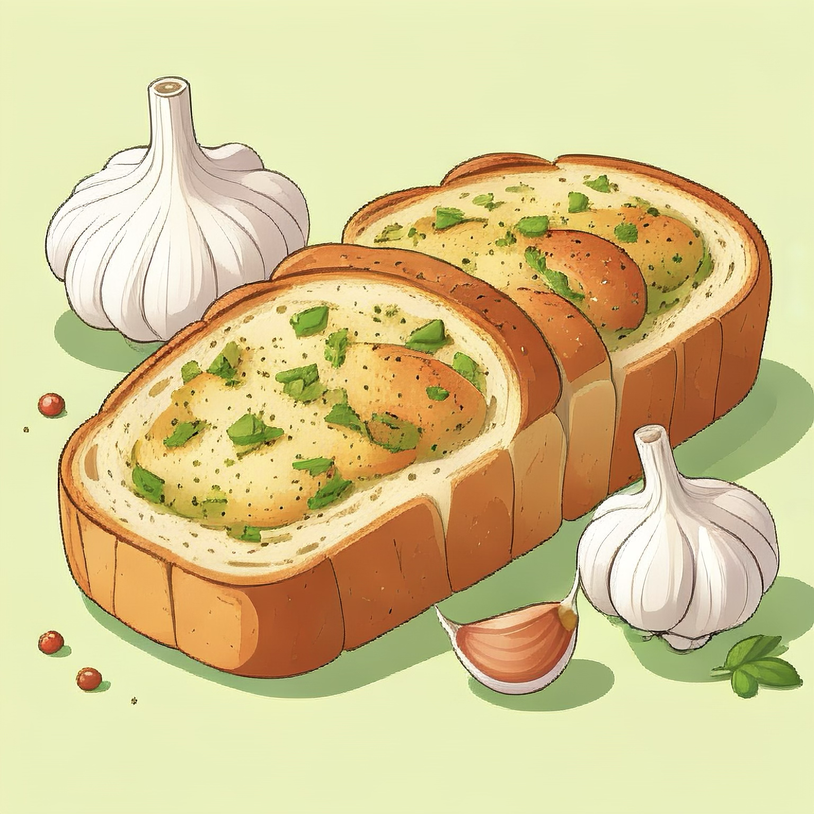

Homepage

Garlic Bread
Ever since I was a kid, iv'e always enjoyed garlic bread as a side dish.
Ingridients
- Bread - Italian or loaf of french bread will do
- 1/2 Cup of soft butter
- Garlic - Actual fresh garlic cloves, garlic powder will not do as a substitue
- Harbs & Spices - Salt and Parsley
Steps
- Prep
Pre heat your oven to 425°. Slice your bread into slices and place them on a parchment paper
lined up with the baking sheet we will be using.
- Garlic Butter
In a bowl, mix the herbs, salt and soft butter. Once mixed, slab onto the top side of the bread pieces.
- Bake
Place uncooked garlic bread into the oven, and let it cook for 10-15 minutes or until golden brown.
For those that enjoy with added cheese layer on top, add grated cheese about two minutes before end of cook.
Simple and easy to make, your garlic bread is rady to be served and companion any main dish, or simply
eat just straight like I enjoy it 😋
Back to recipes